산업위생관리기사 (2022-03-05 기출문제)
1과목: 산업위생학개론
1. 중량물 취급으로 인한 요통발생에 관여 하는 요인으로 볼 수 없는 것은?
- 근로자의 육체적 조건
- 작업빈도와 대상의 무게
- 습관성 약물의 사용 유무
- 작업습관과 개인적인 생활태도
(정답률: 87%)

2. 산업위생의 기본적인 과제에 해당하지 않는 것은?
- 작업환경이 미치는 건강장애에 관한 연구
- 작업능률 저하에 따른 작업조건에 관한 연구
- 작업환경의 유해물질이 대기오염에 미치는 영향에 관한 연구
- 작업환경에 의한 신체적 영향과 최적환경의 연구
(정답률: 72%)
3. 작업시작 및 종료 시 호흡의 산소소비량에 대한 설명으로 옳지 않은 것은?
- 산소소비량은 작업부하가 계속 증가하면 일정한 비율로 계속 증가한다.
- 작업이 끝난 후에도 맥박과 호흡수가 작업개시 수준으로 즉시 돌아오지 않고 서서히 감소한다.
- 작업부하 수준이 최대 산소소비량 수준보다 높아지게 되면, 젖산의 제거 속도가 생성 속도에 못 미치게 된다.
- 작업이 끝난 후에 남아 있는 젖산을 제거하기 위해서는 산소가 더 필요하며, 이 때 동원되는 산소소비량을 산소부채(oxygen debt)라 한다.
(정답률: 71%)
4. 38세 된 남성근로자의 육체적 작업능력(PWC)은 15 kcal/min이다. 이 근로자가 1일 8시간 동안 물체를 운반하고 있으며 이때의 작업 대사량은 7kcal/min이고, 휴식 시 대사량은 1.2 kcal/min이다. 이 사람의 적정 휴식시간과 작업시간의 배분(매시간별)은 어떻게 하는 것이 이상적인가?
- 12분 휴식 48분 작업
- 17분 휴식 43분 작업
- 21분 휴식 39분 작업
- 27분 휴식 33분 작업
(정답률: 67%)
5. 산업위생의 역사에 있어 주요 인물과 업적의 인결이 올바른 것은?
- Percivall Pott - 구리광산의 산 증기 위험성 보고
- Hippocrates - 역사상 최초의 직업병(납중독) 보고
- G. Agricola - 검댕에 의한 직업성 암의 최초 보고
- Bernardino Ramazzini - 금속 중독과 수은의 위험성 규명
(정답률: 81%)
6. 산업안전보건법령상 자격을 갖춘 보건관리자가 해당 사업장의 근로자를 보호하기 위한 조치에 해당하는 의료행위를 모두 고른 것은? (단, 보건관리자는 의료법에 따른 의사로 한정한다.)
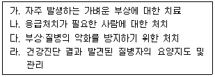
- 가, 나
- 가, 다
- 가, 다, 라
- 가, 나, 다, 라
(정답률: 76%)
7. 온도 25 ℃, 1기압 하에서 분당 100 mL 씩 60분 동안 채취한 공기 중에서 벤젠이 5mg 검출되었다면 검출된 벤젠은 약 몇 ppm 인가? (단, 벤젠의 분자량은 78 이다.)
- 15.7
- 26.1
- 157
- 261
(정답률: 47%)
8. 산업위생전문가들이 지켜야 할 윤리강령에 있어 전문가로서의 책임에 해당하는 것은?
- 일반 대중에 관한 사항은 정직하게 발표한다.
- 위험요소와 예방조치에 관하여 근로자와 상담한다.
- 과학적 방법의 적용과 자료의 해석에서 객관성을 유지한다.
- 위험요인의 측정, 평가 및 관리에 있어서 외부의 압력에 굴하지 않고 중립적 태도를 취한다.
(정답률: 62%)
9. 어떤 플라스틱 제조 공장에 200명의 근로자가 근무하고 있다. 1년에 40건의 재해가 발생하였다면 이 공장의 도수율은? (단, 1일 8시간, 연간 290일 근무기준이다.)
- 200
- 86.2
- 17.3
- 4.4
(정답률: 72%)
10. 산업스트레스에 대한 반응을 심리적 결과와 행동적 결과로 구분할 때 행동적 결과로 볼수 없는 것은?
- 수면 방해
- 약물 남용
- 식욕 부진
- 돌발 행동
(정답률: 48%)
11. 산업안전보건법령상 충격소음의 강도가 130 dB(A)일 때 1일 노출회수 기준으로 옳은 것은?
- 50
- 100
- 500
- 1000
(정답률: 48%)
12. 다음 중 일반적인 실내공기질 오염과 가장 관련이 적은 질환은?
- 규폐증(silicosis)
- 가습기 열(humidifier fever)
- 레지오넬라병 (legionnaires disease)
- 과민성 폐렴(hypersensitivity pneumonitis)
(정답률: 55%)
13. 물체의 실제무게를 미국 NIOSH의 권고 중량물한계기준(RWL : recommended weight limit)으로 나누어 준 값을 무엇이라 하는가?
- 중량상수(LC)
- 빈도승수(FM)
- 비대칭승수(AM)
- 중량물 취급지수(LI)
(정답률: 80%)
14. 산업안전보건법령상 사업주가 위험성평가의 결과와 조치사항을 기록·보존할 때 포함되어야 할 사항이 아닌 것은? (단, 그 밖에 위험성평가의 실시내용을 확인하기 위하여 필요한 사항은 제외한다.)
- 위험성 결정의 내용
- 유해위험방지계획서 수립 유무
- 위험성 결정에 따른 조치의 내용
- 위험성평가 대상의 유해·위험요인
(정답률: 69%)
15. 다음 중 규폐증을 일으키는 주요 물질은?
- 면분진
- 석탄 분진
- 유리규산
- 납흄
(정답률: 57%)
16. 화학물질 및 물리적 인자의 노출기준 고시상 다음 ( )에 들어갈 유해물질들 간의 상호작용은?
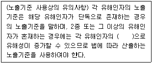
- 상승작용
- 강화작용
- 상가작용
- 길항작용
(정답률: 49%)
17. A사업장에서 중대재해인 사망사고가 1년간 4건 발생하였다면 이 사업장의 1년간 4일 미만의 치료를 요하는 경미한 사고건수는 몇 건이 발생하는지 예측되는가? (단, Heinrich의 이론에 근거하여 추정한다.)
- 116
- 120
- 1160
- 1200
(정답률: 57%)
18. 교대작업이 생기게 된 배경으로 옳지 않은 것은?
- 사회 환경의 변화로 국민생활과 이용자들의 편의를 위한 공공사업의 증가
- 의학의 발달로 인한 생체주기 등의 건강상 문제 감소 및 의료기관의 증가
- 석유화학 및 제철업 등과 같이 공정상 조업중단이 불가능한 산업의 증가
- 생산설비의 완전가동을 통해 시설투자비용을 조속히 회수하려는 기업의 증가
(정답률: 57%)
19. 작업장에 존재하는 유해인자와 직업성 질환의 연결이 옳지 않은 것은?
- 망간 - 신경염
- 무기 분진 - 진폐증
- 6가크롬 - 비중격천공
- 이상기압 - 레이노씨 병
(정답률: 67%)
20. 심한 노동 후의 피로 현상으로 단기간의 휴식에 의해 회복될 수 없는 병적상태를 무엇이라 하는가?
- 곤비
- 과로
- 전신피로
- 국소피로
(정답률: 80%)
2과목: 작업위생측정 및 평가
21. 고체 흡착제를 이용하여 시료채취를 할 때 영향을 주는 인자에 관한 설명으로 틀린 것은?
- 오염물질 농도 : 공기 중 오염물질의 농도가 높을수록 파과 용량은 증가한다.
- 습도 : 습도가 높으면 극성 흡착제를 사용할 때 파과 공기량이 적어진다.
- 온도 : 일반적으로 흡착은 발열 반응이므로 열역학적으로 온도가 낮을수록 흡착에 좋은 조건이다.
- 시료 채취유량 : 시료 채취유량이 높으면 쉽게 파과가 일어나나 코팅된 흡착제인 경우는 그 경향이 약하다.
(정답률: 45%)
22. 불꽃방식의 원자흡광광도계의 특징으로 옳지 않은 것은?
- 조작이 쉽고 간편하다.
- 분석시간이 흑연로장치에 비하여 적게 소요된다.
- 주입 시료액의 대부분이 불꽃부분으로 보내지므로 감도가 높다.
- 고체 시료의 경우 전처리에 의하여 매트릭스를 제거해야 한다.
(정답률: 49%)
23. 산업안전보건법령상 소음의 측정시간에 관한 내용 중 A에 들어갈 숫자는?
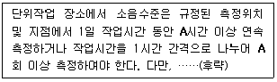
- 2
- 4
- 6
- 8
(정답률: 55%)
24. 산업안전보건법령상 다음과 같이 정의되는 용어는?
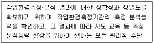
- 정밀관리
- 정확관리
- 적정관리
- 정도관리
(정답률: 58%)
25. 한 근로자가 하루 동안 TCE에 노출되는 것을 측정한 결과가 아래와 같을 때, 8시간 시간가중 평균치(TWA; ppm)는?
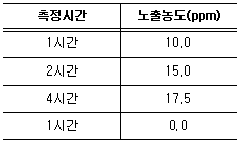
- 15.7
- 14.2
- 13.8
- 10.6
(정답률: 61%)
26. 피토관(Pitot tube)에 대한 설명 중 옳은 것은? (단, 측정 기체는 공기이다.)
- Pitot tube의 정확성에는 한계가 있어 정밀한 측정에서는 경사마노미터를 사용한다.
- Pitot tube를 이용하여 곧바로 기류를 측정할 수 있다.
- Pitot tube를 이용하여 총압과 속도압을 구하여 정압을 계산한다.
- 속도압이 25mmH2O 일때 기류속도는 28.58 m/s이다.
(정답률: 34%)
27. 산업안전보건법령상 작업환경측정 대상이 되는 작업장 또는 공정에서 정상적인 작업을 수행하는 동일 노출집단의 근로자가 작업을 하는 장소를 지칭하는 용어는?
- 동일작업 장소
- 단위작업 장소
- 노출측정 장소
- 측정작업 장소
(정답률: 64%)
28. 근로자가 일정시간 동안 일정 농도의 유해물질에 노출될 때 체내에 흡수되는 유해물질의 양은 아래의 식을 적용하여 구한다. 각 인자에 대한 설명이 틀린 것은?
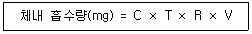
- C : 공기 중 유해물질 농도
- T : 노출시간
- R : 체내 잔류율
- V : 작업공간 공기의 부피
(정답률: 61%)
29. 고열 (Heat stress)의 작업환경 평가와 관련된 내용으로 틀린 것은?
- 가장 일반적인 방법은 습구흑구온도(WBGT)를 측정하는 방법이다.
- 자연습구온도는 대기온도를 측정하긴 하지만 습도와 공기의 움직임에 영향을 받는다.
- 흑구온도는 복사열에 의해 발생하는 온도이다.
- 습도가 높고 대기 흐름이 적을 때 낮은 습구온도가 발생한다.
(정답률: 53%)
30. 같은 작업 장소에서 동시에 5개의 공기시료를 동일한 채취조건하에서 채취하여 벤젠에 대해 아래의 도표와 같은 분석결과를 얻었다. 이 때 벤젠농도 측정의 변이계수(CV%)는?
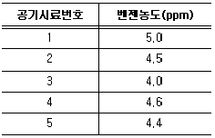
- 8%
- 14%
- 56%
- 96%
(정답률: 38%)
31. 작업장 내 다습한 공기에 포함된 비극성 유기증기를 채취하기 위해 이용할 수 있는 흡착제의 종류로 가장 적절한 것은?
- 활성탄(Activated charcoal)
- 실리카겔(Silica Gel)
- 분자체(Molecular sieve)
- 알루미나(Alumina)
(정답률: 57%)
32. 산업안전보건법령상 가스상 물질의 측정에 관한 내용 중 일부이다. ( )에 들어갈 내용으로 옳은 것은?
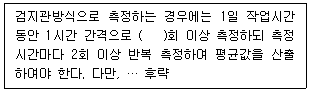
- 2
- 4
- 6
- 8
(정답률: 51%)
33. 벤젠과 톨루엔이 혼합된 시료를 길이 30cm, 내경 3mm인 충진관이 장치된 기체크로마토그래피로 분석한 결과가 아래와 같을 때, 혼합 시료의 분리효율을 99.7%로 증가시키는 데 필요한 충진관의 길이(cm)는? (단, N, H, L, W, Rs, tR은 각각 이론단수, 높이(HETP), 길이, 봉우리 너비, 분리계수, 머무름 시간을 의미하며, 문자 위 “-”(bar)는 평균값을, 하첨자 A와 B는 각각의 물질을 의미하며, 분리효율이 99.7%가 되기 위한 Rs는 1.5이다.)
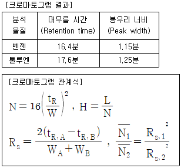
- 60
- 62.5
- 67.5
- 72.5
(정답률: 29%)
34. 단위작업 장소에서 소음의 강도가 불규칙적으로 변동하는 소음을 누적소음 노출량측정기로 측정하였다. 누적소음 노출량이 300%인 경우, 시간가중평균 소음수준(dB(A))은?
- 92
- 98
- 103
- 106
(정답률: 43%)
35. 공장에서 A용제 30%(노출기준 1200 mg/m3),B용제 30%(노출기준 1400 mg/m3) 및 C용제 40%(노출기준 1600 mg/m3)의 중량비로 조성된 액체용제가 증발되어 작업 환경을 오염시킬 때, 이 혼합물의 노출기준(mg/m3)은? (단, 혼합물의 성분은 상가 작용을 한다.)
- 1400
- 1450
- 1500
- 1550
(정답률: 57%)
36. WBGT 측정기의 구성요소로 적절하지 않은 것은?
- 습구온도계
- 건구온도계
- 카타온도계
- 흑구온도계
(정답률: 73%)
37. 유량, 측정시간, 회수율 및 분석에 의한 오차가 각각 18%, 3%, 9%, 5%일 때, 누적 오차(%)는?
- 18
- 21
- 24
- 29
(정답률: 63%)
38. 흡광광도법에 관한 설명으로 틀린 것은?
- 광원에서 나오는 빛을 단색화 장치를 통해 넓은 파장 범위의 단색 빛으로 변화시킨다.
- 선택된 파장의 빛을 시료액 층으로 통과시킨 후 흡광도를 측정하여 농도를 구한다.
- 분석의 기초가 되는 법칙은 램버어트-비어의 법칙이다.
- 표준액에 대한 흡광도와 농도의 관계를 구한 후, 시료의 흡광도를 측정하여 농도를 구한다.
(정답률: 52%)
39. 작업환경 중 분진의 측정 농도가 대수정규분포를 할 때, 측정 자료의 대표치에 해당되는 용어는?
- 기하평균치
- 산술평균치
- 최빈치
- 중앙치
(정답률: 41%)
40. 진동을 측정하기 위한 기기는?
- 충격측정기(Impulse meter)
- 레이저판독판(Laser readout)
- 가속측정기(Accelerometer)
- 소음측정기(Sound level meter)
(정답률: 36%)
3과목: 작업환경관리대책
41. 국소배기 시설에서 장치 배치 순서로 가장 적절한 것은?
- 송풍기 → 공기정화기 → 후드 → 덕트 → 배출구
- 공기정화기 → 후드→ 송풍기 → 덕트 → 배출구
- 후드 → 덕트 → 공기정화기 → 송풍기 → 배출구
- 후드 → 송풍기 → 공기정화기 → 덕트 → 배출구
(정답률: 71%)
42. 금속을 가공하는 음압수준이 98 dB(A)인 공정에서 NRR이 17인 귀마개를 착용했을 때의 차음효과(dB(A))는? (단, OSHA의 차음효과 예측방법을 적용한다.)
- 2
- 3
- 5
- 7
(정답률: 64%)
43. 다음 중 중성자의 차폐(shielding) 효과가 가장 적은 물질은?
- 물
- 파라핀
- 납
- 흑연
(정답률: 40%)
44. 테이블에 붙여서 설치한 사각형 후드의 필요환기량 Q(m3/min)를 구하는 식으로 적절한 것은? (단, 플랜지는 부착되지 않았고, A(m2)는 개구면적, X(m)는 개구부와 오염원 사이의 거리, V(m/s)는 제어 속도를 의미한다.)
- Q = V×(5X2 + A)
- Q = V×(7X2 + A)
- Q = 60×V×(5X2 + A)
- Q = 60×V×(7X2 + A)
(정답률: 64%)
45. 원심력집진장치에 관한 설명 중 옳지 않은 것은?
- 비교적 적은 비용으로 집진이 가능하다.
- 분진의 농도가 낮을수록 집진효율이 증가한다.
- 함진가스에 선회류를 일으키는 원심력을 이용한다.
- 입자의 크기가 크고 모양이 구체에 가까울수록 집진효율이 증가한다.
(정답률: 56%)
46. 직경이 38cm, 유효높이 2.5m의 원통형 백필터를 사용하여 60 m3/min의 함진 가스를 처리할 때 여과속도(cm/s)는?
- 25
- 32
- 50
- 64
(정답률: 32%)
47. 표준상태(STP; 0℃, 1기압)에서 공기의 밀도가 1.293 kg/m3일 때, 40℃, 1기압에서 공기의 밀도(kg/m3)는?
- 1.040
- 1.128
- 1.185
- 1.312
(정답률: 51%)
48. 국소배기장치로 외부식 측방형 후드를 설치할 때, 제어 풍속을 고려하여야 할 위치는?
- 후드의 개구면
- 작업자의 호흡 위치
- 발산되는 오염 공기 중의 중심위치
- 후드의 개구면으로부터 가장 먼 작업 위치
(정답률: 38%)
49. 작업장에서 작업공구와 재료 등에 적용할 수 있는 진동대책과 가장 거리가 먼 것은?
- 진동공구의 무게는 10 kg 이상 초과하지 않도록 만들어야 한다.
- 강철로 코일용수철을 만들면 설계를 자유스럽게 할 수 있으나 oil damper 등의 저항요소가 필요할 수 있다.
- 방진고무를 사용하면 공진 시 진폭이 지나치게 커지지 않지만 내구성, 내약품성이 문제가 될 수 있다.
- 코르크는 정확하게 설계할 수 있고 고유진동수가 20Hz 이상이므로 진동방지에 유용하게 사용할 수 있다.
(정답률: 58%)
50. 여과 집진 장치의 여과지에 대한 설명으로 틀린 것은?
- 0.1um 이하의 입자는 주로 확산에 의해 채취된다.
- 압력강하가 적으면 여과지의 효율이 크다.
- 여과지의 특성을 나타내는 항목으로 기공의 크기, 여과지의 두께 등이 있다.
- 혼합섬유 여과지로 가장 많이 사용되는 것은 microsorban 여과지이다.
(정답률: 41%)
51. 일반적인 후드 설치의 유의사항으로 가장 거리가 먼 것은?
- 오염원 전체를 포위시킬 것
- 후드는 오염원에 가까이 설치할 것
- 오염 공기의 성질, 발생상태, 발생원인을 파악할 것.
- 후드의 흡인 방향과 오염 가스의 이동방향은 반대로 할 것
(정답률: 70%)
52. 앞으로 구부리고 수행하는 작업공정에서 올바른 작업자세라고 볼 수 없는 것은?
- 작업 점의 높이는 팔꿈치보다 낮게 한다.
- 바닥의 얼룩을 닦을 때에는 허리를 구부리지 말고 다리를 구부려서 작업한다.
- 상체를 구부리고 작업을 하다가 일어설 때는 무릎을 굴절시켰다가 다리 힘으로 일어난다.
- 신체의 중심이 물체의 중심보다 뒤쪽에 있도록 한다.
(정답률: 47%)
53. 호흡기 보호구의 사용 시 주의사항과 가장 거리가 먼 것은?
- 보호구의 능력을 과대평가 하지 말아야 한다.
- 보호구 내 유해물질 농도는 허용기준 이하로 유지해야 한다.
- 보호구를 사용할 수 있는 최대 사용가능농도는 노출기준에 할당보호계수를 곱한 값이다.
- 유해물질의 농도가 즉시 생명에 위태로울 정도인 경우는 공기 정화식 보호구를 착용해야 한다.
(정답률: 56%)
54. 흡인구와 분사구의 등속선에서 노즐의 분사구 개구면 유속을 100%라고 할 때 유속이 10% 수준이 되는 지점은 분사구 내경(d)의 몇 배 거리인가?
- 5d
- 10d
- 30d
- 40d
(정답률: 25%)
55. 방진마스크의 성능 기준 및 사용 장소에 대한 설명 중 옳지 않은 것은?
- 방진마스크 등급 중 2급은 포집효율이 분리식과 안면부 여과식 모두 90% 이상이어야 한다.
- 방진마스크 등급 중 특급의 포집효율은 분리식의 경우 99.95% 이상, 안면부 여과식의 경우 99.0% 이상이어야 한다.
- 베릴륨 등과 같이 독성이 강한 물질들을 함유한 분진이 발생하는 장소에서는 특급 방진마스크를 착용하여야 한다.
- 금속흄 등과 같이 열적으로 생기는 분진이 발생하는 장소에서는 1급 방진마스크를 착용하여야 한다.
(정답률: 52%)
56. 레시버식 캐노피형 후드 설치에 있어 열원 주위 상부의 퍼짐각도는? (단, 실내에는 다소의 난기류가 존재한다.)
- 20°
- 40°
- 60°
- 90°
(정답률: 42%)
57. 국소배기 시설의 투자비용과 운전비를 작게 하기 위한 조건으로 옳은 것은?
- 제어속도 증가
- 필요송풍량 감소
- 후드개구면적 증가
- 발생원과의 원거리 유지
(정답률: 62%)
58. 정상류가 흐르고 있는 유체 유동에 관한 연속 방정식을 설명하는데 적용된 법칙은?
- 관성의 법칙
- 운동량의 법칙
- 질량보존의 법칙
- 점성의 법칙
(정답률: 53%)
59. 공기 중의 포화증기압이 1.52 mmHg인 유기용제가 공기 중에 도달할 수 있는 포화농도(ppm)는?
- 2000
- 4000
- 6000
- 8000
(정답률: 44%)
60. 표준공기(21℃)에서 동압이 5mmHg일 때 유속(m/s)은?
- 9
- 15
- 33
- 45
(정답률: 25%)
4과목: 물리적유해인자관리
61. 일반적으로 전신진동에 의한 생체반응에 관여하는 인자와 가장 거리가 먼 것은?
- 온도
- 진동 강도
- 진동 방향
- 진동수
(정답률: 66%)
62. 반향시간(reverberation time)에 관한 설명으로 옳은 것은?
- 반향시간과 작업장의 공간부피만 알면 흡음량을 추정할 수 있다.
- 소음원에서 소음발생이 중지한 후 소음의 감소는 시간의 제곱에 반비례하여 감소한다.
- 반향시간은 소음이 닿는 면적을 계산하기 어려운 실외에서의 흡음량을 추정하기 위하여 주로 사용한다.
- 소음원에서 발생하는 소음과 배경소음간의 차이가 40dB 인 경우에는 60dB 만큼 소음이 감소하지 않기 때문에 반향시간을 측정할 수 없다.
(정답률: 53%)
63. 산업안전보건법령상 이상기압과 관련된 용어의 정의가 옳지 않은 것은?
- 압력이란 게이지 압력을 말한다.
- 표면공급식 잠수작업은 호흡용 기체통을 휴대하고 하는 작업을 말한다.
- 고압작업이란 고기압에서 잠함공법이나 그 외의 압기 공법으로 하는 작업을 말한다.
- 기압조절실이란 고압작업을 하는 근로자가 가압 또는 감압을 받는 장소를 말한다.
(정답률: 54%)
64. 빛과 밝기의 단위에 관한 설명으로 옳지 않은 것은?
- 반사율은 조도에 대한 휘도의 비로 표시한다.
- 광원으로부터 나오는 빛의 양을 광속이라고 하며 단위는 루멘을 사용한다.
- 입사면의 단면적에 대한 광도의 비를 조도라 하며 단위는 촉광을 사용한다.
- 광원으로부터 나오는 빛의 세기를 광도라고 하며 단위는 칸델라를 사용한다.
(정답률: 44%)
65. 전리방사선의 종류에 해당하지 않는 것은?
- γ선
- 중성자
- 레이저
- β선
(정답률: 65%)
66. 다음 중 방사선에 감수성이 가장 큰 인체조직은?
- 눈의 수정체
- 뼈 및 근육조직
- 신경조직
- 결합조직과 지방조직
(정답률: 53%)
67. 산소결핍이 진행되면서 생체에 나타나는 영향을 순서대로 나열한 것은?
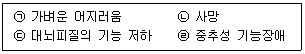
- ㉠ → ㉢ → ㉣ → ㉡
- ㉠ → ㉣ → ㉢ → ㉡
- ㉢ → ㉠ → ㉣ → ㉡
- ㉢ → ㉣ → ㉠ → ㉡
(정답률: 70%)
68. 자외선으로부터 눈을 보호하기 위한 차광보호구를 선정하고자 하는데 차광도가 큰것이 없어 두 개를 겹쳐서 사용하였다. 각각의 보호구의 차광도가 6과 3이었다면 두 개를 겹쳐서 사용한 경우의 차광도는?
- 6
- 8
- 9
- 18
(정답률: 45%)
69. 체온의 상승에 따라 체온조절중추인 시상하부에서 혈액온도를 감지하거나 신경망을 통하여 정보를 받아 들여 체온방산작용이 활발해지는 작용은?
- 정신적 조절작용(spiritual thermoregulation)
- 화학적 조절작용(chemical themoregulation)
- 생물학적 조절작용(biological thermoregulation)
- 물리적 조절작용(physical thermoregulation)
(정답률: 48%)
70. 다음 중 진동에 의한 장해를 최소화시키는 방법과 거리가 먼 것은?
- 진동의 발생원을 격리시킨다.
- 진동의 노출시간을 최소화시킨다.
- 훈련을 통하여 신체의 적응력을 향상시킨다.
- 진동을 최소화하기 위하여 공학적으로 설계 및 관리한다.
(정답률: 68%)
71. 저온 환경에 의한 장해의 내용으로 옳지 않은 것은?
- 근육 긴장이 증가하고 떨림이 발생한다.
- 혈압은 변화되지 않고 일정하게 유지된다.
- 피부 표면의 혈관들과 피하조직이 수축된다.
- 부종, 저림, 가려움, 심한 통증 등이 생긴다.
(정답률: 72%)
72. 작업장의 조도를 균등하게 하기 위하여 국소조명과 전체조명이 병용될 때, 일반적으로전체 조명의 조도는 국부조명의 어느 정도가 적당한가?
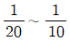
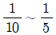
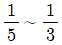
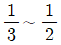
(정답률: 61%)
73. 다음 중 소음에 의한 청력장해가 가장 잘 일어나는 주파수 대역은?
- 1000 Hz
- 2000 Hz
- 4000 Hz
- 8000 Hz
(정답률: 64%)
74. 다음 중 감압과정에서 감압속도가 너무 빨라서 나타나는 종격기종, 기흉의 원인이 되는 것은?
- 질소
- 이산화탄소
- 산소
- 일산화탄소
(정답률: 57%)
75. 음향출력이 1000W 인 음원이 반자유공간(반구면파)에 있을 때 20 m 떨어진 지점에서의 음의 세기는 약 얼마인가?
- 0.2 W/m2
- 0.4 W/m2
- 2.0 W/m2
- 4.0 W/m2
(정답률: 34%)
76. 다음에서 설명하는 고열 건강장해는?
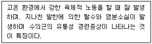
- 열성 발진(heat rashes)
- 열사병(heat stroke)
- 열 피로(heat fatigue)
- 열 경련(heat cramps)
(정답률: 66%)
77. 마이크로파와 라디오파에 관한 설명으로 옳지 않은 것은?
- 마이크로파의 주파수 대역은 100~3000 MHz 정도이며, 국가(지역)에 따라 범위의 규정이 각각 다르다.
- 라디오파의 파장은 1MHz와 자외선 사이의 범위를 말한다.
- 마이크로파와 라디오파의 생체작용 중 대표적인 것은 온감을 느끼는 열작용이다.
- 마이크로파의 생물학적 작용은 파장 뿐만 아니라 출력, 노출시간, 노출된 조직에 따라 다르다.
(정답률: 34%)
78. 18℃ 공기 중에서 800 Hz인 음의 파장은 약 몇 m인가?
- 0.35
- 0.43
- 3.5
- 4.3
(정답률: 38%)
79. 음압이 2배로 증가하면 음압레벨(sound pressure level)은 몇 dB 증가하는가?
- 2
- 3
- 6
- 12
(정답률: 67%)
80. 고압환경의 영향 중 2차적인 가압 현상(화학적 장해)에 관한 설명으로 옳지 않은 것은?
- 4기압 이상에서 공기 중의 질소 가스는 마취 작용을 나타낸다
- 이산화탄소의 증가는 산소의 독성과 질소의 마취작용을 촉진시킨다.
- 산소의 분압이 2기압을 넘으면 산소 중독증세가 나타난다.
- 산소중독은 고압산소에 대한 노출이 중지되어도 근육경련, 환청 등 후유증이 장기간 계속된다.
(정답률: 63%)
5과목: 산업독성학
81. 산업안전보건법령상 사람에게 충분한 발암성 증거가 있는 유해물질에 해당하지 않는 것은?
- 석면(모든 형태)
- 크롬광 가공(크롬산)
- 알루미늄(용접 흄)
- 황화니켈(흄 및 분진)
(정답률: 50%)
82. 다음 설명에 해당하는 중금속은?
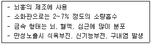
- 납(Pb)
- 수은(Hg)
- 카드뮴(Cd)
- 안티몬(Sb)
(정답률: 56%)
83. 골수장애로 재생불량성 빈혈을 일으키는 물질이 아닌 것은?
- 벤젠(benzene)
- 2-브로모프로판(2-bromopropane)
- TNT(trinitrotoluene)
- 2,4-TDI(Toluene-2,4-diisocyanate)
(정답률: 48%)
84. 호흡성 먼지(Respirable particulate mass)에 대한 미국 ACGIH의 정의로 옳은 것은?
- 크기가 10 ~ 100um 로 코와 인후두를 통하여 기관지나 폐에 침착한다.
- 폐포에 도달하는 먼지로 입경이 7.1um 미만인 먼지를 말한다.
- 평균 입경이 4um 이고, 공기역학적 직경이 10um 미만인 먼지를 말한다.
- 평균 입경이 10um인 먼지로 흉곽성(thoracic) 먼지라고도 한다.
(정답률: 58%)
85. 무기성 분진에 의한 진폐증이 아닌 것은?
- 규폐증(silicosis)
- 연초폐증(tabacosis)
- 흑연폐증(graphite lung)
- 용접공폐증(welder's lung)
(정답률: 56%)
86. 생물학적 모니터링에 관한 설명으로 옳지 않은 것을 모두 고른 것은?
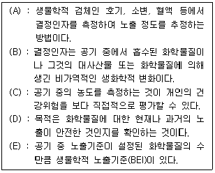
- (A), (B), (C)
- (A), (C), (D)
- (B), (C), (E)
- (B), (D), (E)
(정답률: 44%)
87. 체내에 노출되면 metallothionein 이라는 단백질을 합성하여 노출된 중금속의 독성을 감소시키는 경우가 있는데 이에 해당되는 중금속은?
- 납
- 니켈
- 비소
- 카드뮴
(정답률: 48%)
88. 산업안전보건법령상 다음 유해물질 중 노출기준(ppm)이 가장 낮은 것은? (단, 노출기준은 TWA기준이다.)
- 오존(O3)
- 암모니아(NH3)
- 염소(CI2)
- 일산화탄소(CO)
(정답률: 52%)
89. 유해인자에 노출된 집단에서의 질병 발생률과 노출되지 않은 집단에서 질병 발생률과의 비를 무엇이라 하는가?
- 교차비
- 발병비
- 기여위험도
- 상대위험도
(정답률: 53%)
90. 수은중독의 예방대책이 아닌 것은?
- 수은 주입과정을 밀폐공간 안에서 자동화한다.
- 작업장 내에서 음식물 섭취와 흡연 등의 행동을 금지한다.
- 수은취급 근로자의 비점막 궤양 생성여부를 면밀히 관찰한다.
- 작업장에 흘린 수은은 신체가 닿지 않는 방법으로 즉시 제거한다.
(정답률: 65%)
91. 일산화탄소 중독과 관련이 없는 것은?
- 고압산소실
- 카나리아새
- 식염의 다량투여
- 카르복시헤모글로빈(carboxyhemoglobin)
(정답률: 57%)
92. 유해물질이 인체에 미치는 영향을 결정하는 인자와 가장 거리가 먼 것은?
- 개인의 감수성
- 유해물질의 독립성
- 유해물질의 농도
- 유해물질의 노출시간
(정답률: 62%)
93. 벤젠의 생물학적 지표가 되는 대사물질은?
- Phenol
- Coproporphyrin
- Hydroquinone
- 1,2,4 - Trihydroxybenzene
(정답률: 61%)
94. 유기용제의 흡수 및 대사에 관한 설명으로 옳지 않은 것은?
- 유기용제가 인체로 들어오는 경로는 호흡기를 통한 경우가 가장 많다.
- 대부분의 유기용제는 물에 용해되어 지용성 대사산물로 전환되어 체외로 배설된다.
- 유기용제는 휘발성이 강하기 때문에 호흡기를 통하여 들어간 경우에 다시 호흡기로 상당량이 배출된다.
- 체내로 들어온 유기용제는 산화, 환원, 가수분해로 이루어지는 생전환과 포합체를 형성하는 포합반응인 두 단계의 대사과정을 거친다.
(정답률: 41%)
95. 다핵방향족 탄화수소(PAHs)에 대한 설명으로 옳지 않은 것은?
- 벤젠고리가 2개 이상이다.
- 대사가 활발한 다핵 고리화합물로 되어있으며 수용성이다.
- 시토크롬(cytochrome) P-450의 준개체단에 의하여 대사된다.
- 철강 제조업에서 석탄을 건류할 때나 아스팔트를 콜타르 피치로 포장할 때 발생된다.
(정답률: 36%)
96. 증상으로는 무력증, 식욕감퇴, 보행장해 등의 증상을 나타내며, 계속적인 노출시에는 파킨슨씨 증상을 초래하는 유해물질은?
- 망간
- 카드뮴
- 산화칼륨
- 산화마그네슘
(정답률: 64%)
97. 다음 중 중추신경 활성억제 작용이 가장 큰 것은?
- 알칸
- 알코올
- 유기산
- 에테르
(정답률: 45%)
98. 산업안전보건법령상 기타 분진의 산화규소 결정체 함유율과 노출기준으로 옳은 것은?
- 함유율: 0.1% 이상, 노출기준: 5 mg/m3
- 함유율: 0.1% 이하, 노출기준: 10 mg/m3
- 함유율: 1% 이상, 노출기준: 5 mg/m3
- 함유율: 1% 이하, 노출기준: 10 mg/m3
(정답률: 47%)
99. 단순 질식제로 볼 수 없는 것은?
- 오존
- 메탄
- 질소
- 헬륨
(정답률: 57%)
100. 금속의 일반적인 독성작용 기전으로 옳지 않은 것은?
- 효소의 억제
- 금속평형의 파괴
- DNA 염기의 대체
- 필수 금속성분의 대체
(정답률: 54%)